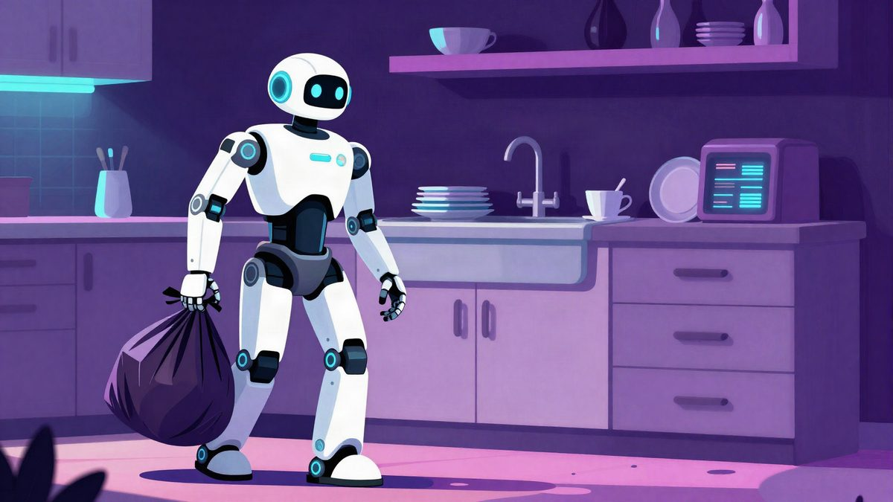

BYD Denza B5 na dva kotača je vukao Boeing 747 od 180 tona 1.600 metara

BYD je u Velikoj Britaniji pokazao plug-in hibridni SUV Denza B5 kako vuče Boeing 747 mase 180 tona, i to samo na dva lijeva kotača. Time je ponovio pokus Volkswagena Touarega, uz dodatno otežanje. Cijena i dostupnost u Europi još nisu poznate.
Kineski plug-in hibridni SUV Denza B5 vukao je putnički Boeing 747 mase 180 tona po poligonu u Velikoj Britaniji, a kretao se samo na dva lijeva kotača. BYD je tako ponovio poznati pokus Volkswagena Touarega, koji je ranije također vukao zrakoplov, ali je ovom testu dodano neobično otežanje.
Denza B5 je prvi pokušaj odradio na tri kotača, uz dodatnih 2.000 kg balasta. U drugom su inženjeri skinuli dva desna kotača i povećali balast na 4.500 kg. Nakon tri pokušaja SUV je odvukao Boeing 747 na udaljenost od 1.600 metara.
BYD tvrdi da je korištena serijska, nemodificirana verzija automobila.
Ovjes i pogon
Denza B5 ima hidraulički ovjes DiSus-P, koji omogućuje promjenu visine šasije za 140 mm i podnosi opterećenje do 9 tona.
Pogon se zove DM-O, a čine ga 1,5-litreni turbo motor snage 135 kW (181 KS) i dva elektromotora od 200 i 285 kW. Ukupna snaga ograničena je na 400 kW (536 KS), a okretni moment na 760 Nm.
Karoserija je 96 posto izrađena od visokočvrstog čelika i koristi cell-to-chassis konstrukciju. Prednja i stražnja os nemaju mehaničku vezu, pa automobil ne može prenositi vuču s jedne osi na drugu.
BYD je pokus snimio, a snimka je objavljena na YouTubeu.
Izvor: iXBT
Povezani članci

Musk: Optimus bi za 12 do 18 mjeseci trebao raditi kućanske poslove, nova demonstracija stiže za mjesec-dva21. studenoga 2026. Mercedes-Benz je u San Franciscu pokazao MB.DRIVE ASSIST PRO, gradsku vožnju s 27 senzora i konkurenta Teslinom FSD-u20. studenoga 2026.
Mercedes-Benz je u San Franciscu pokazao MB.DRIVE ASSIST PRO, gradsku vožnju s 27 senzora i konkurenta Teslinom FSD-u20. studenoga 2026.- ISHO Ring Pro je pokazao uzrok lošeg sna: u zatvorenoj spavaćoj sobi CO2 prelazi 1000 ppm7. studenoga 2026.